| Habit : | Trees , often buttressed , up to 20 m tall, with stilt roots and pneumatophores or knee roots . |
| Leaves : | Leaves simple , alternate , distichous ; petiole 2-4 cm long, stout, canaliculate , tomentose when young, later glabrous ; lamina 20-60 x10-15 cm, elliptic-oblong , apex acute with blunt tip or acuminate , base rounded or subtruncate , margin entire , thickly coriaceous , glossy above, densely rusty tomentose beneath, later glabrous ; midrib raised above; secondary_nerves 12-18 pairs, impressed above; tertiary_nerves obscure or percurrent when visible. |
| Inflorescence / Flower : | Flowers unisexual , dioecious , urceolate ; male flowers clusters of 10-20 flowers on woody peduncle , subumbellate ; female flowers 2 or 3 in axillary fascicles . |
| Fruit and Seed : | Capsule , 10.5 x 5-7, oblong-ovoid , densely rusty tomentose ; seed one, cylindrical, covered with bright orange-red lacerated aril . |

 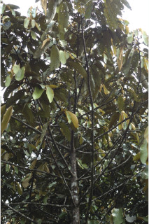
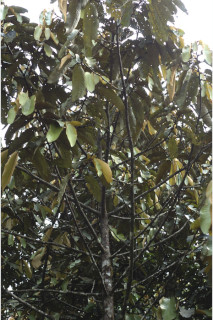
 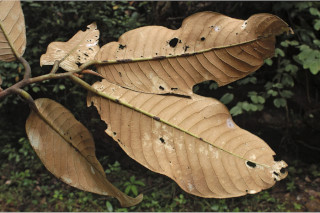
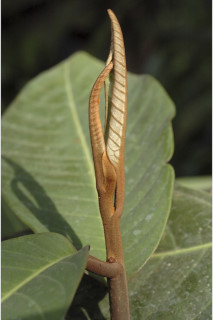
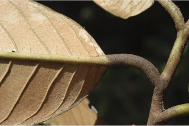
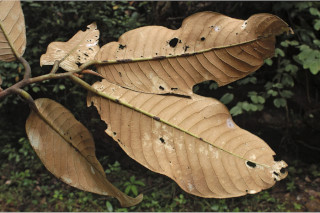
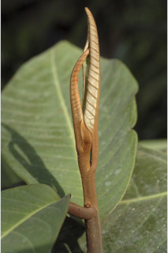
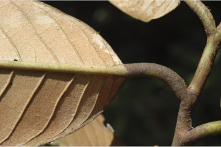

 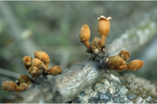
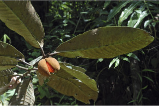
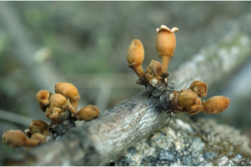
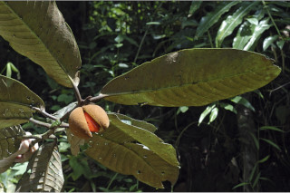